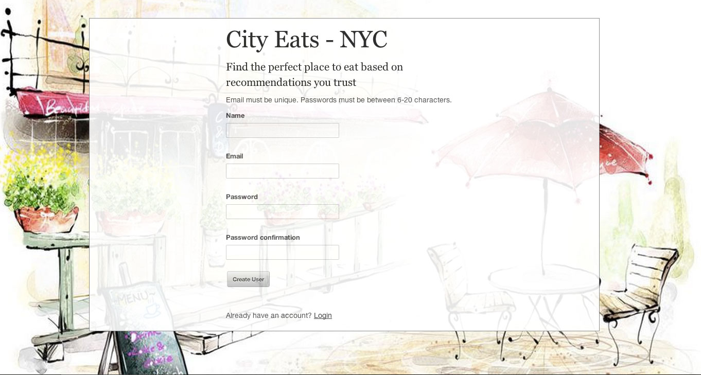
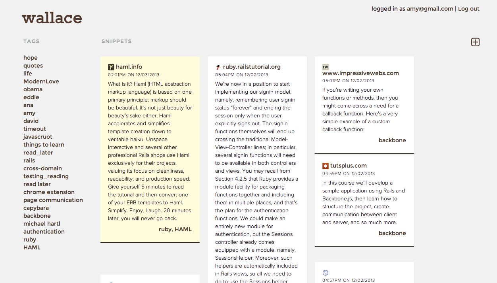
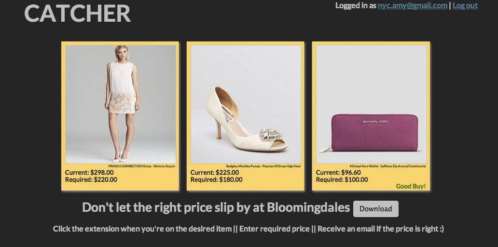

City Eats - My first Ruby on Rails project, developed to help users easily retrieve friends' restaurant recommendations.

Wallace - Chrome Extension and web app to help users save and organize lines they don't want to forget. Created in collaboration with Ana Giraldo-Wingler and Edward Shin.

Catcher - Chrome Extension and web app built to let users know when their desired item hits the required price at Bloomingdales